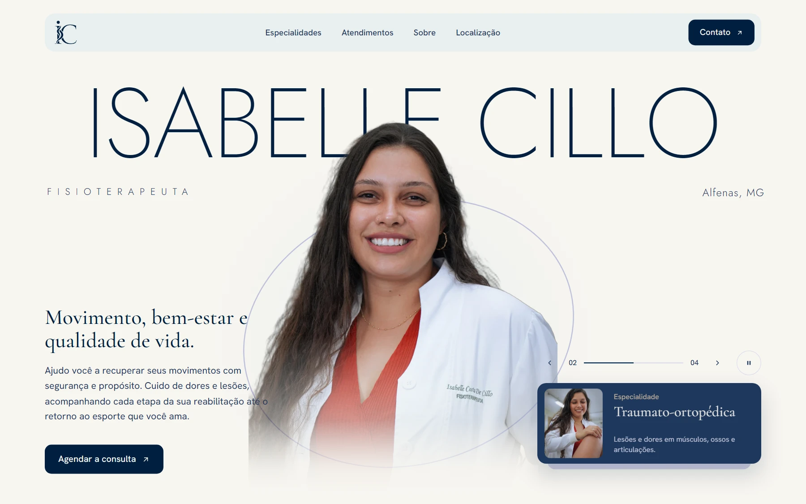
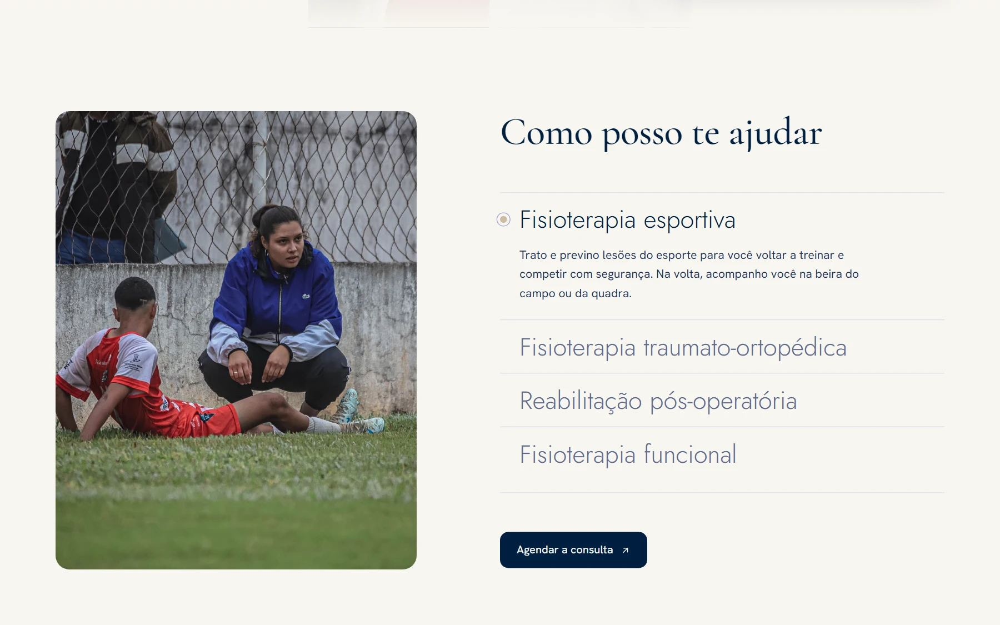
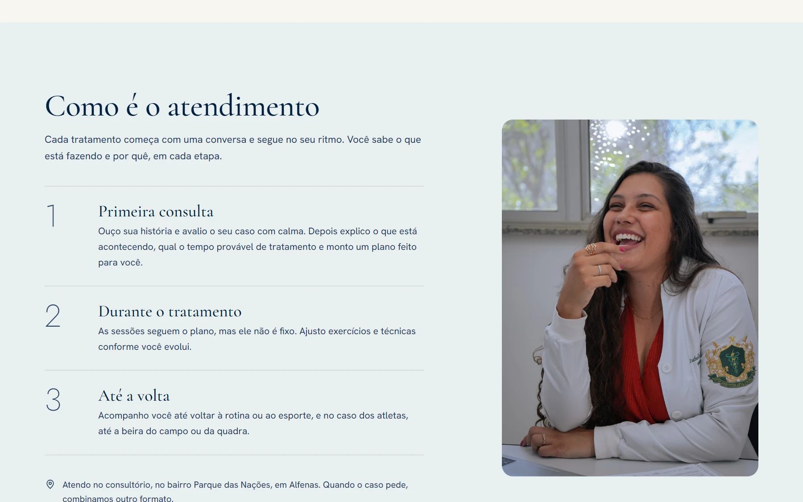
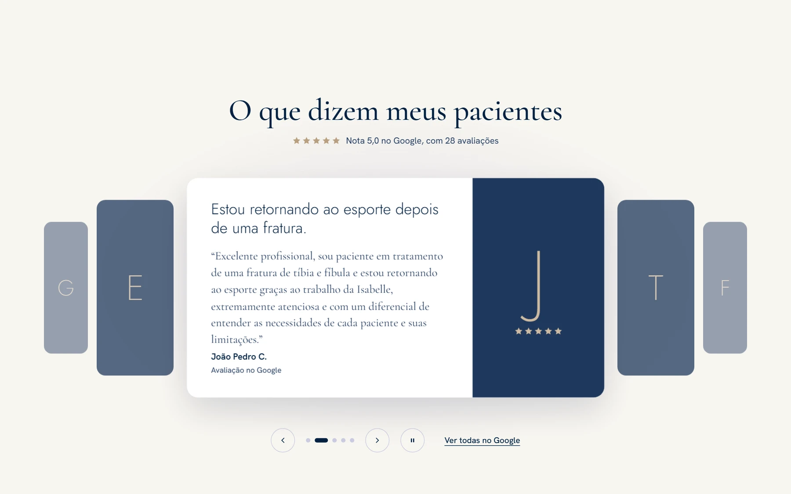
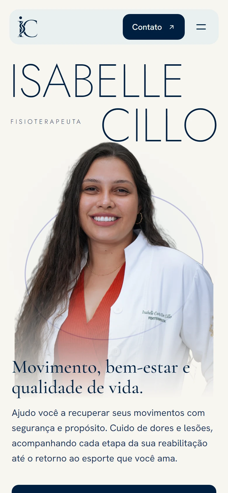
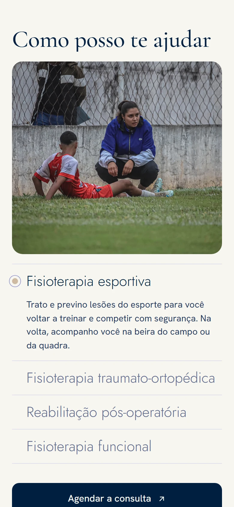
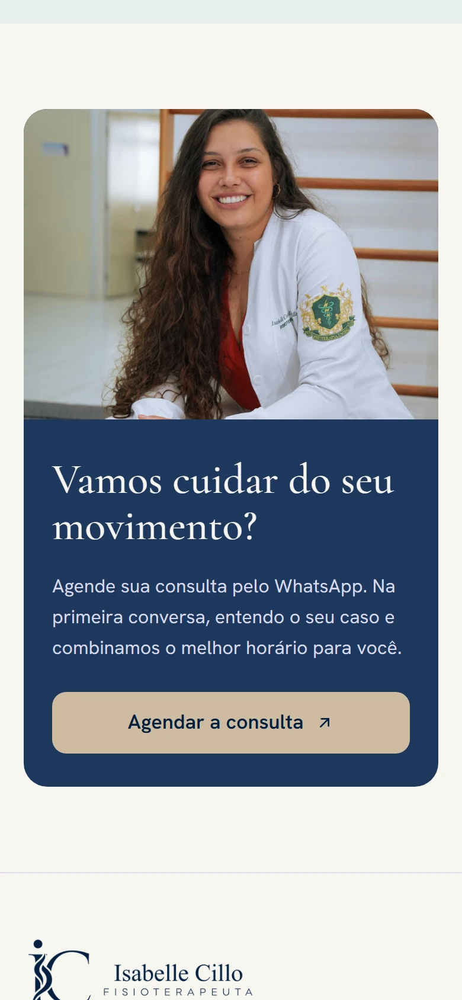

Isabelle Cillo · Fisioterapeuta
Movimento, bem-estar
e qualidade de vida.




Abertura
O nome e a especialidade em destaque
Como posso te ajudar
Quatro áreas de atendimento
Como é o atendimento
Cada etapa explicada para o paciente
Depoimentos
Nota 5,0 no Google, com 28 avaliações



No celular
Agendar a consulta pelo WhatsApp em um toque
Vamos cuidar do seu movimento?
isabellecillo.com.br
Fisioterapeuta em Alfenas, MG